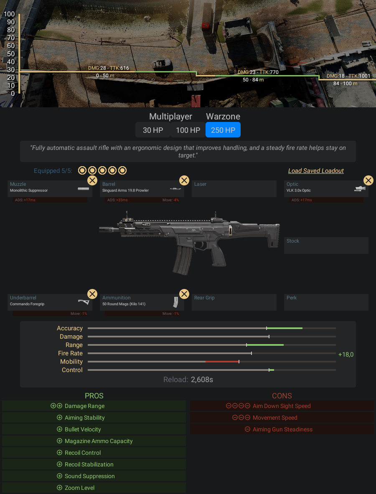

Fuzil de assalto totalmente automático com design ergonômico que melhora o manuseio.
Possui cadência de tiros estável que ajuda a manter o foco no alvo.
- Pontos Positivos:
- -Tem um recuo muito fácil de se controlar, das armas listadas aqui é o
- mais fácil de se aprender a controlar
- -Tem um dano médio para curta, média e longa distância
- Pontos Negativos:
- -Ela é uma intermediária para tudo, então não vai se sobressair em
- nenhuma situação
Informações e dicas de como fazer uma classe da Kilo 141:
Acessórios para Kilo 141:
- Boca - Surpressor Monolítico
- Cano - Singuards Arms 19.8 Prowler
- Lente - VLK 3,0x
- Acoplamento - Empunhadora de Comando
- Munição - Carregador de 50 projéteis